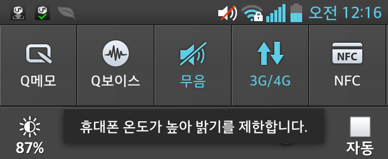
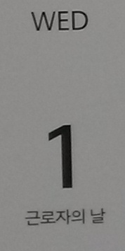
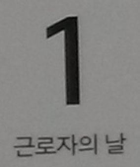
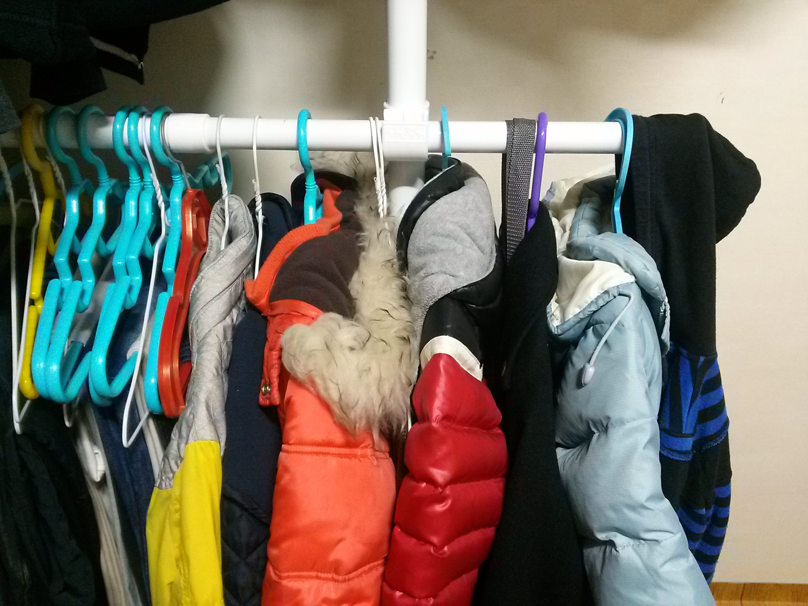
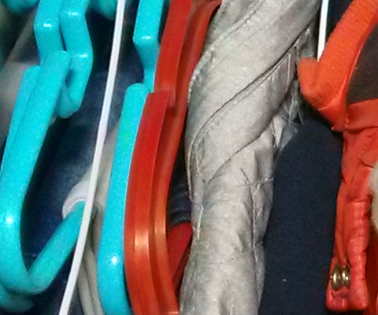

5월 1일 스마트폰을 장만했다. 번호 이동으로 2년 약정, 옵티머스G다. 그 전엔 회사용으로 삼성 바다 웨이브, 삼성 갤럭시탭 7을 썼었는데 개인 폰으로는 처음이다.
옵티머스G는 작년 10월에 출시되면서 이른바 회장님의 특명으로 개발한 "회장님 폰"이라는 것인데 웨이브나 갤럭시탭에 비해서는 월등히 장점이 많지만 기대했던 것보다 못한 점들이 몇 가지 보이고 있다.
온라인에 옵티머스G의 장점은 많이 찾을 수 있으므로 여기서는 단점을 정리해보려고 한다. 사용하면서 계속 나오는 대로 추가해보겠다.
발열 - 밝기 100으로 놓고 10분 정도만 웹서핑을 하면 폰 윗 부분이 열이 좀 난다. 특히 간혹 화면 밝기가 떨어지는데(어두워진다) 다시 밝기를 높이려고 하면 "휴대폰 온도가 높아 밝기를 제한합니다"라는 메시지가 나타난다.

옵티머스G의 액정이 삼성의 AMOLED에 비해 밝기 때문에 80으로 놔도 충분한 것 같아서 그렇게 사용하고 있는데 그 이후로는 발열 현상이 심하지 않다. 그래도 개인적으로 가장 신경쓰이는 단점이다.
컬러 밴딩 - 온라인에서 "옵티머스G 색맹"으로 알려진 현상이다(뉴스 기사 참고). 일반적으로는 Google Play에서 Display Tester 앱을 실행해보면 아래 사진과 같이 확인할 수 있다.

LG의 답변이 가관이다. 정상이라니. 일반 사용시 문제점을 느낄 수는 없으니 참고 있지만 결함이 있는 폰이라는 기분이 조금 든다.
사진 품질 - 1300만 화소가 뭐 대단할 거라고 당연히 기대 안했지만 삼성의 800만 화소 폰카에 비해 별로인 건 확실하다. 카메라 사진에 대해 잘은 모르지만 저녁에 실내 조명 아래서 찍은 사진의 차이가 정말 카메라 품질의 차이가 아닐까 생각하는데 옵티머스G의 야간 실내 사진은 별로다. 아주 밝은 낮에 찍은 사진도 확대해서 보면 입자의 선명도가 떨어지는 듯하다. 그리고 이건 다른 카메라도 비슷한 것으로 아는데 왜 저장되는 JPG 품질을 떨어뜨리는지 알 수가 없다. JPG는 품질이 안 좋을수록 색깔 경계가 진한 곳에 노이즈가 많은 것인데 옵티머스G는 그게 조금 더 심하지 않나 싶다.
 
달력을 찍은 사진과 확대해서 본 사진


캘린더 버그 - 캘린더 일정을 등록할 때 장소를 지정하는 건 자주 있는 일이다. 옵티머스G에서는 장소에 대해 검색하는 단추를 누르면 구글 지도로 검색하게 되는데 전혀 검색 기능이 동작하지 않는다.
이어폰 - 나는 막귀라 음질에 아주 예민한 편은 아니다. 256kbps 음질과 64kbps 음질의 차이 정도만 구분할 정도다. 그래서인지 일부에서는 호평하는 "쿼드비트 이어폰"이 별로 좋게 들리지 않는다. 일단 저음이 너무 약하다. 찾아보니 고무 팁을 바꿔끼우면 약간 강화된다는데 그런 수고를 하고 싶지 않다. 또한 고음이 너무 부자연스럽게 챙그랑거린다. 말하자면 박수소리 "짝짝"이 "착착"으로 고음 성분만 들리는 느낌이다. 실제로 대부분의 평가가 가격 대비는 좋지만 번들 이어폰을 못벗어났다는 평이 많은데 난 번들 이어폰으로서도 점수를 주고 싶지 않다. 갤럭시 탭 7에 딸려온 이어폰이 훨씬 제대로 된 번들이라는 느낌이다.
댓글
댓글을 불러오는 중입니다.